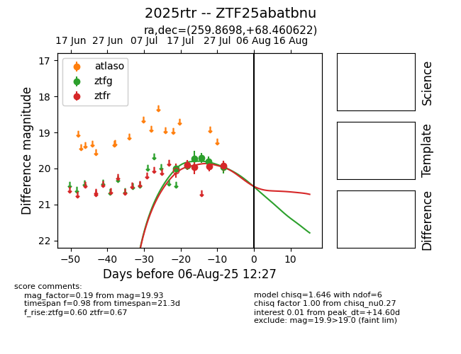

Target 2025rtr at 2025-08-06 17:07, see:
FINK: fink-portal.org/2025rtr
Lasair: lasair-ztf.lsst.ac.uk/objects/2025rtr
ALeRCE: alerce.online/object/2025rtr
TNS: wis-tns.org/object/2025rtr
YSE: ziggy.ucolick.org/yse/transient_detail/2025rtr
alt names
ZTF25abatbnu (ztf,fink)
2025rtr (tns,yse)
coordinates:
equatorial (ra, dec) = (259.8698,+68.46062)
galactic (l, b) = (99.0251,+33.48771)
photometry
last ztfg=19.96, ztfr=19.93
6 ztfg, 4 ztfr detections
